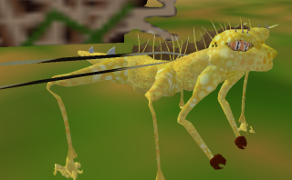
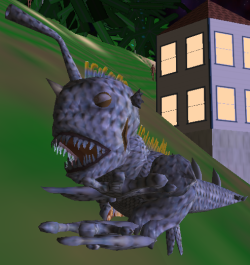
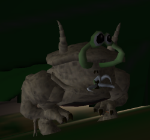
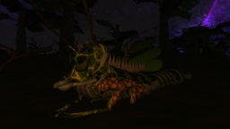

Animals
Animals are the creatures that inhabit the planets of Hazeron. The term animals broadly encompasses every mobile living creature, including insects, spiders, mammals, fish, reptiles, amphibians, whales, birds, or whatever you call them; there are far too many animal species in Hazeron to give them formal names automatically. Player characters are animals in many respects; their bodies are constructed using the same DNA and physical attributes of their bodies are based on the same parameters.
Animals are not present on all planets, only those with suitable environments. Animals naturally occur on planets in the habitable zone with standard or tainted atmospheres that have a density range of 15% to 85%. Animals may be present in and near the sea on planets in the cold outer zone. Animals may be present in the sea and on the land in the hot inner zone. Animals exist in most planetary environments that support plants.
Animals vary in size. Shores of Hazeron does not represent small insignificant animals. The smallest animals are about the size of a rat. The largest animals tower among the tallest skyscrapers and eat spacecraft whole.
Species
Animals eat things. Animals fill ecological roles in the environments of planets based largely on their diets.
- Carnivores eat animals.
- Herbivores eat plants.
- Omnivores eat animals and plants.
- Scavengers eat the remains of animals and plants.
A planet is divided into three resource zones, like an orange divided into three equal slices. Resource quality and abundance varies by zone. The only visible change from one zone to the next is the appearance of the plant life. Otherwise, you must spot the terrain to watch for a change in resource quality to notice that you are in a different zone. Moons and extremely tiny planets have only one zone. Ringworlds are divided into seven zones, corresponding to the seven day/night cycle bands.
Animal species are distributed in each resource zone based on terrain altitude above sea level, relative vegetation density, and time of day. Terrain is considered to be one of four altitudes: high land, low land, sea level, and underwater. Vegetation density is considered to be one of three densities: forest, savanna, and desert. Time of day is based on actual solar light level and is considered to be dark, dim, or bright. Each combination of terrain altitude, vegetation density, and time of day is considered to be a different specie area for distribution of animal species.
Within each specie area, seven species of animals reside. All four of the ecological roles are represented in each specie area with two carnivores, two herbivores, one omnivore, and two savengers.
Four altitudes X three vegetation densities X three times of day X seven species = 252 different species of animals in each resource zone. In all, each planet has 756 different species of animals distributed across its surface and under the sea; each ringworld has 1764 different animal species!
Animal species are stored using a compact string of data, referred to as its DNA. The DNA of animals in Hazeron is capable of describing quadrillions of combinations. The 3D model representation of each animal specie is synthesized from its DNA. Not all DNA attributes are visible on the model, particularly those related to its behavior. After traveling to many planets you may see an animal that reminds you of another animal you saw elsewhere but it is unlikely to be identical.
Specie Names
Species can be named by players. The name of a specie applies to its exact combination of DNA. Animal species can be named by all players. A sentient specie can only be named by a player who is that sentient specie.
A specie that is named will show that specie name to all players who spot the creature. Specie names are shared by all players across the galaxy.
After a specie is named, only the person who named the specie can change the name of the specie. This is done simply by naming the specie again.
There are several ways to name a specie.
- Spot - Use the ` or ~ keys to spot a creature. The Log channel on the Comm (F3) window has a button for assigning a name to the last specie that was spotted. The creature must be in your scene at the time the name is assigned. The name assignment will fail if the creature moves away before you have entered a name.
- Carcass - Pick up a carcass from a creature. Select the carcass on the Inventory (F4) window. Press the Name Specie button. Alternatively, drag the carcass to the Name Specie button.
- DNA Sample - Collect a DNA sample of a creature using a DNA sample kit. Select the DNA sample on the Inventory (F4) window. Press the Name Specie button. Alternatively, drag the DNA sample to the Name Specie button.
Behavior
Animal behavior is primarily geared toward eating. Animals do not display mating behavior in Shores of Hazeron.
Animals have temperaments regarding threats or prey they detect in their vicinity. Some animals will tolerate the presense of other animals; others will not. When an animal attacks another animal, it is not always looking for food. It could feel threatened. It may be asserting a claim to its territory. It might be looking for a host for its young.
Animals perceive their environments using their senses. Animals see, hear, and smell other animals, including people, depending upon the acuity of their eyes, ears, and nose. Many factors such as relative sizes, ecological roles, and temperament affect their reaction to the things they perceive.
Animals move through their environment using assorted forms of locomotion. Many animals walk or slither on the ground with the aid of arms or legs. Some animals fly through the air using wings and others swim in the sea. Animals even burrow through the ground to forage for food or hunt for prey. Amphibious creatures are equally at home on land and in the sea; triphibious creatures take to the air as well. Aquaerial creatures live in the sea and fly through the air but they are not comfortable on land.
Combat
Animals attack threats or prey using their physical body. Animals may bite, claw or kick depending upon how they are physically equipped. Quite often, animals boast some form of specialized natural weapon.
Natural animal weaponry harms its target in several possible ways. Contact weapons physically strike the tarket, such as the stinging tail of a scorpion. Some weapons affect all creatures within a short distance of the animal, such as the shock from an electric eel. Animals even use projectile weapons, such as spitting cobras and skunks. In the realm of science fiction, psionic powers exist. Creatures in Hazeron sometimes attack their targets using forces concentrated within their own minds.
Natural weaponry has many possible affects upon the victim. Physical weapons bludgeon, slash or pierce the flesh of the opponent. Other weapons inflict harm of various sorts, such as acid, poison or disease. The severity of a weapon's harmfulness varies with different species and it is proportional to the size of the animal.
An animal falls to the ground when it is mortally wounded. While lying on the ground in its death throes, an animal can be saved with prompt medical attention. Once the animal dies, its 3D model disappears from the game and an Animal Carcass commodity is left where it fell. Amphibious creatures with thin skin will leave a Fish Carcass commodity instead. The slight difference is due to the ability to produce leather from the animal carcass; leather cannot be produced from a fish carcass.
An animal that has fallen to the ground can be picked up. Look at the animal and press the E key. If the animal's body is not too large, you will pick it up and carry it on your back. While an animal is carried on your back, it's bleeding is stabilized. The animal will stay unconscious at its current health level until you drop it by pressing the E key.
An unconscious player who is carried in this way can press the E key to drop from the carrying player. This prevents an unconscious player from being captured indefinitely.
Next (Topics/Atmoshpere) ->